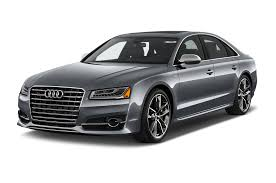
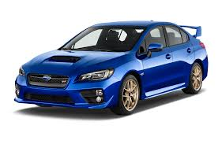
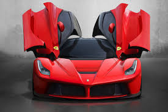

Things i like
Its great to want to own alot of things. I find it easy to like alot of things. This are the list of thisngs i like
cars
- Audi

- subaru

- prado

- ferrari

Food
- chapo

- rice

- beef

- chips

 blog
blog
the reason for my brand new cars is due to their confort
and super s are some things i am going to learn about coding
this kind of food are highly available in the country delicious and affordable.
they give one energy to code and perform different tasks more efficientry